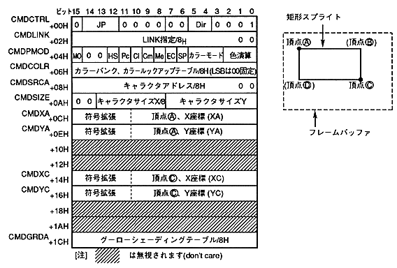

The contents of the command table for specifying two coordinates are as follows.

The two-point coordinate specification for the rectangle sprite drawing command is defined as follows.
- If the end bit is set to 0B and the command selection bit is set to 0001B, it becomes a rectangular sprite drawing command.
- Specify the jump format. When the jump format is assign or call, divide the address of the command table to be processed next by 8H and set to CMDLINK.
- Set the zoom point to 0000B. Specify two coordinates.